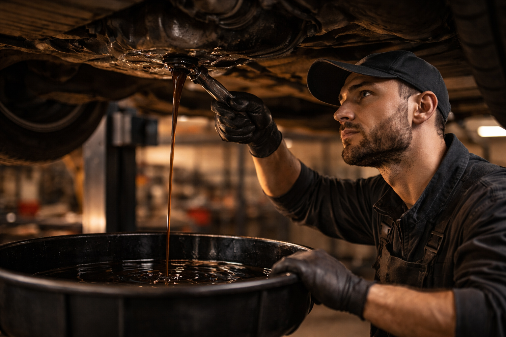

Chez Ali-Ka, nous prenons soin de votre moteur avec des vidanges réalisées dans les règles de l'art. Huile de qualité, filtres neufs et contrôle complet des niveaux, le tout à Etterbeek.
La vidange moteur est l'intervention d'entretien la plus importante pour votre véhicule. Chez Ali-Ka, Avenue des Casernes à Etterbeek, nous effectuons le remplacement de l'huile moteur et du filtre à huile avec des produits de qualité adaptés à votre motorisation. Un entretien régulier protège votre moteur contre l'usure prématurée et maintient ses performances. Les arrêts fréquents dans le trafic bruxellois, notamment sur la chaussée de Wavre et autour du rond-point Schuman, accélèrent la dégradation de l'huile. Que vous rouliez au quotidien dans Bruxelles ou que vous fassiez de longs trajets, notre service de vidange à Etterbeek garantit un moteur en parfait état de fonctionnement.
Détails du service vidangePrenez rendez-vous pour votre vidange. Service rapide, sans rendez-vous possible.
02 647 47 01